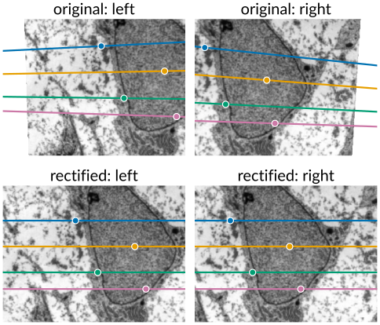
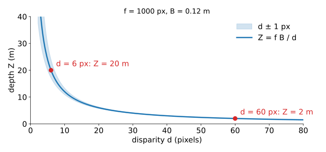
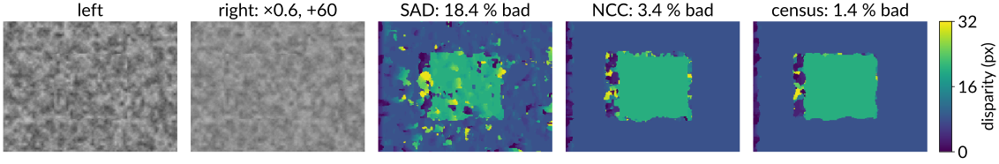
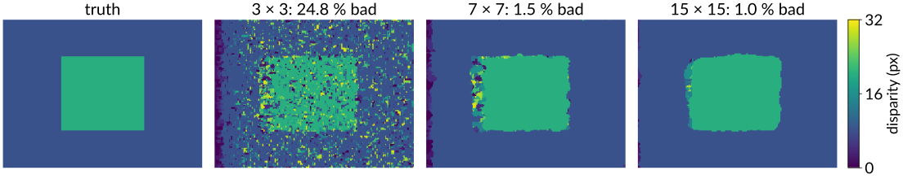
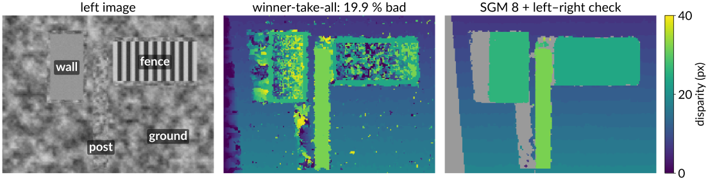
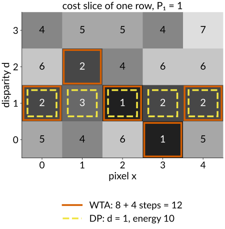
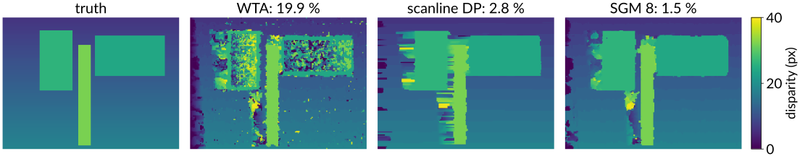

Two calibrated cameras side by side, like two eyes. Last unit: a match lies on an epipolar line. Today: match every pixel, and turn the result into a depth map.
Rectification: warp both images so that epipolar lines become the same rows.
Disparity → depth: Z = fB/d, and why far things are hard.
Matching costs in a window (SAD, NCC, census) and the cost volume.
What goes wrong: textureless regions, repetition, occlusions; the left–right check.
Global methods: scanline dynamic programming and semi-global matching.
Sub-pixel disparity; active stereo; stereo in microscopy.
Slides titled The math give the formulas and proofs; the ideas are complete without them.
Rectification: epipolar lines become rows
After rectification, a pixel’s match is on the same row in the other image, a little to the left. Matching becomes a 1D search along a row.
Turn both cameras (in the computer) to a common orientation whose x axis is the baseline: then the motion between them is purely sideways, and the epipolar lines are rows (last unit).
Turning a camera about its centre changes the image by a homography, so each image is resampled once: for every output pixel, ask where it comes from in the original and interpolate (images day, “go backwards”).
Stereo rigs are built nearly rectified (parallel cameras on a bar); a calibration makes it exact. Lens distortion is removed in the same resampling.

The math: rectifying homographies
A camera rotated about its centre by R' sees \mathbf x_\text{new} \simeq K R'\,\mathbf X_\text{cam} \simeq K R' K^{-1}\mathbf x_\text{old}: a homography (the pure-rotation case of the last unit).
New common orientation R_\text{rect} with rows \mathbf e_1 = \frac{\mathbf c' - \mathbf c}{\lVert\mathbf c' - \mathbf c\rVert} (the baseline), \mathbf e_2 = \frac{\mathbf z \times \mathbf e_1}{\lVert\cdot\rVert} with \mathbf z the average viewing direction, \mathbf e_3 = \mathbf e_1 \times \mathbf e_2.
For each camera with rotation R: H = K_\text{new}\,R_\text{rect}\,R^\top K^{-1}.
In the new frames both cameras differ only by a translation along x: E = [(B, 0, 0)]_\times, and \hat{\mathbf x}'^\top E\hat{\mathbf x} = 0 reduces to y' = y (with the same K_\text{new} for both).
Disparity and depth

For rectified cameras the disparityd = x - x' (left minus right column) gives the depth: Z = \frac{fB}{d}\qquad(f \text{ in pixels, } B \text{ the baseline}).
Near things shift a lot, far things little; d = 0 is infinitely far.
f = 1000 px, B = 0.12 m: d = 60 px is 2 m, d = 6 px is 20 m, d = 5 px is 24 m. One pixel is 3 cm of depth at 2 m, but 4 m at 20 m.
So depth resolution falls with distance squared: measure disparities to a fraction of a pixel, or widen the baseline.
The math: depth from disparity
Rectified cameras at (0, 0, 0) and (B, 0, 0), both with focal length f (pixels) and the same principal point: x = f\frac{X}{Z}, \qquad x' = f\frac{X - B}{Z} \quad\Longrightarrow\quad d = x - x' = \frac{fB}{Z}, \qquad Z = \frac{fB}{d}.
Sensitivity: \dfrac{\partial Z}{\partial d} = -\dfrac{fB}{d^2} = -\dfrac{Z^2}{fB}, so \delta Z \approx \dfrac{Z^2}{fB}\,\delta d.
To keep the depth error fixed at larger Z, the baseline must grow like Z^2 (or f, i.e. finer pixels).
Then X = xZ/f and Y = yZ/f (measured from the principal point): every valid disparity becomes a 3D point.
Matching costs and the cost volume
For a left pixel and a candidate disparity d, compare a small window around it with the window around (x - d, y) in the right image:
SAD/SSD (sum of absolute/squared differences): fast, but a brightness or gain difference between the cameras ruins it.
NCC (normalised cross-correlation): subtract each window’s mean and divide by its standard deviation first: insensitive to gain and offset.
Census: replace each pixel by a bit string, “is this neighbour darker than the centre?”; compare bit strings (count differing bits). Only the order of brightnesses matters: robust to any monotone brightness change. The standard choice in practice.
All costs for all pixels and all disparities form the cost volumeC(x, y, d): one image of costs per disparity.

The math: costs
With windows \mathcal W around (x, y) and around (x - d, y), I left, J right:
Census: c(\mathbf p) = \big([I(\mathbf q) < I(\mathbf p)]\big)_{\mathbf q \in \mathcal N(\mathbf p)}, a bit string; cost = Hamming distance \#\{k: c_L(\mathbf p)_k \ne c_R(\mathbf p - d)_k\}, summed over the window.
A strictly increasing brightness map g keeps every comparison I(\mathbf q) < I(\mathbf p), so census codes are unchanged; NCC is invariant under I \to aI + b (a > 0) only.
Window sums for all pixels cost O(1) per pixel with running sums or integral images (integral images elective), whatever the window size.
Window size and winner-take-all
Winner-take-all (WTA): for each pixel, the disparity of lowest cost. The window size is the main knob:
Small windows: little texture inside, so many disparities look alike: noisy disparity maps.
Large windows: reliable in textured areas, but at a depth edge the window straddles foreground and background, and the textured foreground wins: objects come out fatter than they are (foreground fattening). Slanted surfaces blur too.
By hand: left row (1, 1, 5, 9, 5, 1, 1, 1), right row shifted 2 to the left. A window of 3 centred on the 9: SAD = 12, 12 and 0 for d = 0, 1, 2. A constant row gives the same cost for every d: no information.

Try it: stereo matching
What goes wrong
Textureless regions: every disparity matches equally well; the minimum is decided by noise.
Repetitive patterns (a fence, tiles, a grid): several disparities match equally well, one period apart.
Occlusions: near every depth edge, a strip of background is visible in one image only. Those pixels have no correct match; whatever WTA picks is wrong.
Specular highlights move with the viewpoint: they are not on the surface.
Left–right check: match left→right and right→left; keep a pixel only if the two disparities agree (within one pixel). Occluded and ambiguous pixels mostly fail and are marked invalid: holes to be filled later, never “depth 0”.

Global methods: add smoothness
Neighbouring pixels usually have similar disparities. Make that part of the problem: the same data + λ·smoothness energy as for segmentation (segmentation as energy minimisation), with the disparity as a label from 0, \dots, D - 1:
In 2D this is hard to minimise exactly (many labels, many loops). Graph cuts with α-expansion give good approximations (graph-cut segmentation).
Along one row it is a chain, and a chain is solved exactly by dynamic programming.
Scanline dynamic programming
One row of the cost volume is a table: columns x, rows d. A disparity profile is a path through it.
Find the cheapest path, with P_1 for small steps and P_2 for jumps: exactly the table filling and backtracking of dynamic programming on paths: fill the cumulative cost column by column, keep a pointer to the best predecessor, backtrack from the best end.
Occlusions appear as jumps in the path (Ohta & Kanade, 1985).
Each row is solved independently: one row’s mistake does not know about its neighbours: horizontal streaks.
By hand (the exercise): a 4 \times 5 slice where WTA jumps 1, 2, 1, 0, 1 (cost 8 + four steps of P_1 = 1 = 12) and DP takes the straight path at disparity 1 (cost 10).

Semi-global matching
Hirschmüller (2008): do the 1D dynamic programming along several directions (left, right, up, down, and the diagonals: 4 or 8), and add the results.
Each direction carries evidence from far along its own line; together they cover the 2D neighbourhood. Few streaks.
Then winner-take-all on the summed costs.
Linear in the number of pixels × disparities × directions; easy to run in parallel. The standard algorithm in practice (cars, drones, depth cameras).
Learned matching costs (neural networks comparing patches) and end-to-end networks are common today; they still build a cost volume and often keep an SGM-like aggregation.

The math: semi-global matching
For a direction \mathbf r, along the line of pixels \mathbf p - \mathbf r, \mathbf p, \dots:
L_\mathbf r(\mathbf p, d) = C(\mathbf p, d) + \min\!\Big(L_\mathbf r(\mathbf p - \mathbf r, d),\ L_\mathbf r(\mathbf p - \mathbf r, d \pm 1) + P_1,\ \min_k L_\mathbf r(\mathbf p - \mathbf r, k) + P_2\Big) - \min_k L_\mathbf r(\mathbf p - \mathbf r, k).
The last term only keeps the numbers small (it is the same for every d).
S(\mathbf p, d) = \sum_\mathbf r L_\mathbf r(\mathbf p, d), then d_\mathbf p = \arg\min_d S(\mathbf p, d).
One direction alone is the forward pass of scanline DP: at the row’s last pixel its minimum is the DP’s end label; elsewhere SGM does not backtrack, which is why it needs several directions.
P_1 = P_2 = 0: each L_\mathbf r is C plus a constant, and SGM is WTA.
Try it: aggregation
Sub-pixel disparity
Integer disparities give depth in steps: at 20 m, one step is 4 m in the example. Interpolate the cost curve:
Fit a parabola through the costs at d - 1, d, d + 1; take its minimum. By hand: costs 4, 1, 2 give the offset +0.25.
Works best on textured, smooth surfaces; the stitching unit uses the same trick for sub-pixel shifts.
In the demo (SGM 4 on the slanted ground): the mean error of the good pixels drops from 0.26 to 0.12 px.
Together with a long baseline, sub-pixel matching is what makes stereo useful at a distance.
C_0 is the discrete minimum, so a \ge 0 and |\delta^*| \le \tfrac12.
The parabola is exact for a quadratic cost; for SAD (a V-shaped cost near the minimum) it is biased towards integers (“pixel locking”); other fits (a symmetric V) reduce the bias.
Active stereo, and stereo under the microscope
Active stereo, structured light: project a random-dot or striped pattern onto the scene. Textureless surfaces get texture; matching works everywhere the pattern lands. Many depth cameras work like this (with one camera, the projector itself plays the second “camera”).
Stereo microscopes and stereo endoscopes: two optical paths at a small angle: the same geometry, a small baseline.
Scanning electron microscope tilt pairs: two images at tilt angles differing by \Delta\theta about an axis in the image plane. The camera is affine, and a height difference h shows up as a parallax p perpendicular to the tilt axis: h = p / (2\sin(\Delta\theta/2)). A 2 µm parallax with a 10° tilt difference is a height of 11.5 µm.
Other routes to depth from images: depth from focus (the sharpest slice of a focus stack, per pixel) and from defocus (the blur size), the optional last unit of this day.
Summary
Rectify (one homography per image) so that matches lie on the same row.
DepthZ = fB/d; the depth error grows with Z^2: sub-pixel disparity and a long baseline help.
Costs in a window: SAD (fast, fragile), NCC (gain-invariant), census (order only, robust); the cost volumeC(x, y, d).
Window size: small = noisy, large = fat foreground. Failures: textureless, repetitive, occluded; the left–right check marks them invalid.
Smoothness: scanline DP per row (streaks), semi-global matching along 4–8 directions (the practical standard), graph cuts in 2D.